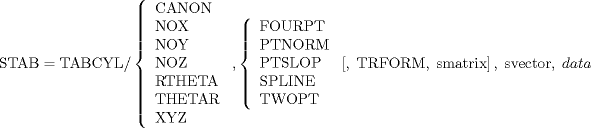

| 3.18. The Tabulated Cylinder (TABCYL) Definition | ||
|---|---|---|
 | Chapter 3. Geometric Statements in APT |  |
| 3.18. The Tabulated Cylinder (TABCYL) Definition | ||
|---|---|---|
| | Chapter 3. Geometric Statements in APT | |
A tabulated cylinder (TABCYL) is the surface generated by moving a line (generatrix) along a space curve (directrix) such that it is always parallel to a given line. The space curve is defined by a set of points and an interpolation scheme for "fairing" between given points. A maximum of 139 points may be given to define the space curve. However, when using some of the formats available for TABCYL specification, it is possible to exceed the limitation on the maximum number of elements in one statement (see Section 1.1.6) well before the 139 point limit is reached. The limiting value in such cases depends upon the number of elements being used in the description of each point, and must be determined by the part programmer.
The general format of the TABCYL is:

![[Note]](images/note.png) | Note |
|---|---|
A symbolic vector (svector) must be specified if, and only if, the XYZ format is used. |
The various options available under the formats indicated above (CANON, NOX, NOY, NOZ, RTHETA, THETAR, XYZ), together with the data representations, are discussed in the following sections.
A TABCYL can be transformed at the time it is defined by using TRFORM and specifying the symbolic MATRIX (smatrix) to be used.
A TABCYL can be defined by specifying the canonical form of parameters:
STAB = TABCYL/ CANON, n, k, m1, ... m9, u1, v1, a1, b1, c1, r1, u2, v2, a2, b2, c2, r2, ... un, vn, an, bn, cn, rn, un+1, vn+1,
See Section 16.15 for an explanation of the terms.
The data in these formats is given in the XY plane, the generatrix is normal to the XY plane; and coordinate transformation is limited to the XY plane. NOZ implies X, Y coordinates only are given; RTHETA and THETAR indicate polar coordinates, where r is the radius (in units) and θ is the angle in degrees measured counter clockwise from the positive X axis.
| Note |
|---|---|
RTHETA means r1, θ1, r2, θ2, ... rn, θn, and THETAR implies θ1, r1, θ2, ... r2, θn, rn. |
The following sections discuss the options (PTNORM, PTSLOP, TWOPT, FOURPT, SPLINE) available under these formats.
| Note |
|---|---|
The NOZ format is used, although the options also apply to RTHETA and THETAR |
STAB = TABCYL/ NOZ, PTNORM, [TRAFORM, smatrix,] x1, y1, n1, x2, y2, n2, ... xn, yn, nn
This option is used when the normals (n1, n2, ... nn, where n is specified in degrees measured counter clockwise from the positive X axis) are to be input for each given point. The interpolation technique defines a series of curves that go through the given points, matching the specified normals at each point.
STAB = TABCYL/ NOZ, PTSLOP, [TRAFORM, smatrix,] x1, y1, s1, x2, y2, s2, ... xn, yn, sn
This option is used when the slopes (s1, s2, ... sn, where s is specified as Δy / Δx) are known at each given point. The fitting scheme is such that the slopes are matched at each point.
This option is used when the slopes or normals are specified only at selected points. The program computes a slope or normal when not specified; it then processes as in Section 3.18.3.1 or Section 3.18.3.2.
STAB = TABCYL/ NOZ, FOURPT, [TRAFORM, smatrix,] x1, y1, x2, y2, ... xn, yn
This option defines a series of curves, each one passing through four successive input points. The resulting TABCYL does not have a continuous slope.
These formats are identical to the NOZ format (Section 3.18.3) except that the data reference plane is different.
NOX implies the XZ plane and requires that the points be specified in the y, z order (y1, z1, y2, z2, ..., yn, zn). NOY implies the ZX plane and requires that the points be specified in the z, x order (z1, x1, z2, x2, ..., zn, xn).
This format requires that the symbolic vector (svector) representing the generatrix be specified. Further, the processor determines which coordinate plane will control the fitting techniques; therefore, no slopes or normals can be given.
The options (TWOPT, FOURPT, SPLINE) are as outlined in Section 3.18.3.3 through Section 3.18.3.5, respectively, with the exception that no slopes are given in the TWOPT method.
| |  | |
| 3.17. The Reference System (REFSYS) Statement |  | 3.19. The Polyconic (POLCON) Definition |